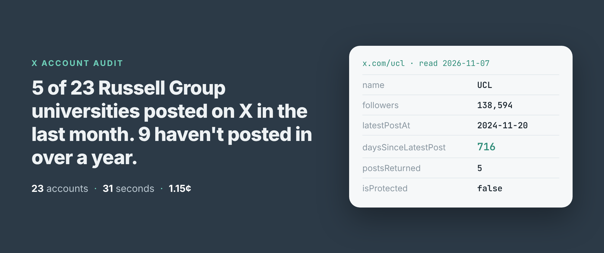
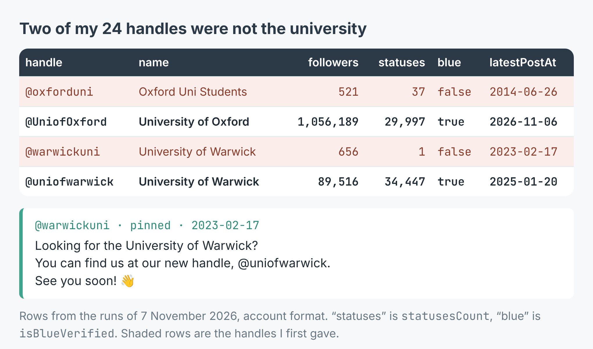
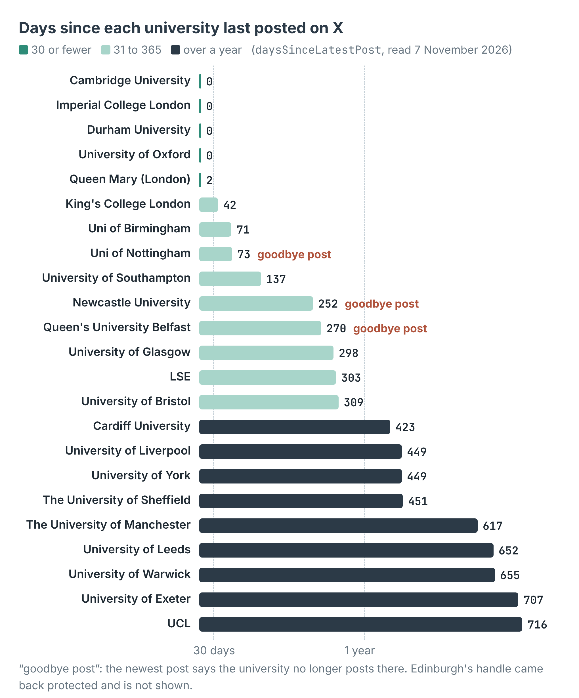

How to check which X (Twitter) accounts in a list are still active (24 UK universities)
I wrote this with an AI assistant. The runs, numbers and code are real, and I checked them.

The first answer I got said the University of Oxford hadn't posted on X since 26 June 2014.
It was wrong, and it was my fault. I'd typed OxfordUni from memory. That handle, which X writes as oxforduni, belongs to an account called "Oxford Uni Students", with 521 followers and 37 posts, the last one about the state of student houses. The university is @UniofOxford, with 1,056,189 followers, and it posted the day before I looked.
That's the first thing to know about checking a list of X accounts: before you ask whether an account is active, check it's the account you meant.
The run
I build and run an X profile scraper on Apify. It reads what X shows a logged-out visitor, so there's no login and no API key. Set outputFormat to profile and each handle comes back as one row: the account record, its latest five posts, and three fields made for this job, latestPostAt, daysSinceLatestPost and timelineWithheld.
On the morning of 7 November I gave it the X handles I had for the 24 universities of the Russell Group. In Node:
import { ApifyClient } from 'apify-client';
const client = new ApifyClient({ token: process.env.APIFY_TOKEN });
const run = await client.actor('simple.actor/x-profile-posts')
.call({ handles: ['UniofOxford', 'ucl', 'QUBelfast'],
outputFormat: 'profile' });
const { items } = await client.dataset(run.defaultDatasetId)
.listItems();
for (const a of items) {
if (a.error) { console.warn(a.inputUrl, a.error); continue; }
console.log(a.userName, a.followers, a.daysSinceLatestPost);
}
It took 31 seconds and returned 24 rows, one per handle. Twenty-three were read. The 24th, @EdinburghUni, came back as a row with error: "protected": its posts are visible only to approved followers. The row can't tell me whether that's the university's own account locked or a handle that belongs to someone else, so I've left Edinburgh out of the count.
Two handles that weren't the university
Oxford wasn't the only slip. @warwickuni has 656 followers and exactly one post, pinned since 17 February 2023, telling visitors the university has moved to @uniofwarwick. I ran the two right handles again on their own, six seconds.

Follower count and post count give a wrong handle away at a glance. The blue check doesn't: only 6 of the 23 right accounts carry it.
Both wrong handles were real accounts, so both were read and charged. Nothing in the run flagged them. What did was the row itself: a university with a few hundred followers is not a university's main account. Look at name, followers and statusesCount on the first run, before you trust any dates.
Who still posts
With the right handles, here is how recently each of the 23 last posted, as daysSinceLatestPost counted on the day of the read:

Five posted in the last 30 days. Nine haven't posted in over a year. The middle university, Glasgow, last posted 298 days ago.
Oxford, Cambridge, Imperial and Durham had all posted the day before. Queen Mary posted two days before. Then there's a long drop. UCL has 138,594 followers and its last post went up on 20 November 2024, 716 days earlier. Exeter's was 707 days earlier, Warwick's 655, Leeds' 652, Manchester's 617.
Read the last post, not only its date
Nottingham sits at 73 days, which on dates alone looks like a slow account, not a dead one. Its newest post, pinned, reads: "We no longer post on this account, but it remains active for monitoring purposes." Newcastle's, from 27 February 2026: "We will no longer be posting content to our X account." Queen's University Belfast's, from 9 February 2026: "We are currently not using X (formerly Twitter)."
So three of the 23 latest posts are goodbyes, and each one resets the clock. With a date rule of "posted in the last 90 days", Nottingham passes as live. A fourth comes close: Leeds' last post, from 23 January 2025, says the university had "experienced a huge drop in engagement due to developments on the platform".
The account row carries the posts it was judged on, under posts, so the fix is cheap: sort them by timestamp and read the newest one's text. The example scripts flag a newest post that says "no longer", "not using X" or "new handle". It's a blunt match, but it caught all three goodbyes and Warwick's old handle.
What it cost
The scraper charges $0.0005 per profile read, and nothing per post. The 23 accounts read in the first run came to $0.0115, 1.15 cents. Edinburgh's protected row wasn't charged. Correcting the two handles cost another $0.001.
At that price, a weekly check of 300 accounts costs 15 cents. The listing says a list is read at about two and a half seconds an account, so a thousand handles take about forty minutes; these 24 went faster.
What a date can't tell you
Five posts is all X shows a logged-out visitor, and there's no next page. That's enough to say when an account last posted, but not how often it posts.
Reposts don't count. The logged-out timeline carries an account's own posts and replies, not its reposts of others, so an account that only reposts will read as silent.
X sometimes shows a profile and none of its posts. The scraper reads it again from another address, and if the posts are still missing the row says timelineWithheld: true with no posts, and isn't charged. None of my 23 did that; every one returned five posts. The listing says it happens most to very small or new accounts.
And a protected account is a dead end. You get the protected row and nothing else.
Make it your list
The example repo, x-twitter-account-checker, takes any list of handles and prints each account's followers, last post date, days since, a status (active, quiet, silent over a year) and the first line of its newest post, flags goodbyes, and writes everything to accounts.csv, in Node and in Python. Swap the universities for your own list: the councils in your county, the brands in a trade show's exhibitor list, the creators in an old campaign spreadsheet. Check the names and follower counts first, then the dates, then the last post. The scraper is at apify.com/simple.actor/x-profile-posts.